Portfolio


Resume
-
Febuary 2024 - Present
Hunter College
Teaching Assistant
Provided specialized support to students in Introduction to Computer Science, offering guidance on course topics and concepts. Conducted comprehensive exam review sessions to prepare students for assessments, addressing inquiries and enhancing understanding. Responsibly graded assignments, projects, midterms, and final exams, contributing to the overall academic progress of students.
-
January 2025 - May 2025
Headstream
Fullstack Engineer
Rebuilt the organization’s website with Django, integrating front- and back-end improvements—including a Grok API-powered chat feature, dynamic routing, and optimized data flow—to deliver a scalable, user-friendly platform for greater social impact.
January 2025 - May 2025
Trustworthy, Intelligent, and Explainable Robotics (TIER) Lab
Undergraduate Research Assistant
Designed and developed an advanced robotic system leveraging computer vision and machine learning to recognize facial expressions, emotions, gestures, and body language. Created a personalized, adaptive educational program to support emotional and social skill development in children with autism. Engineered an interactive response system that dynamically adapts to children's behavior, enhancing engagement and learning outcomes. Additionally, programmed expressive navigation behaviors to convey emotions through movement, improving comprehension of nonverbal communication.
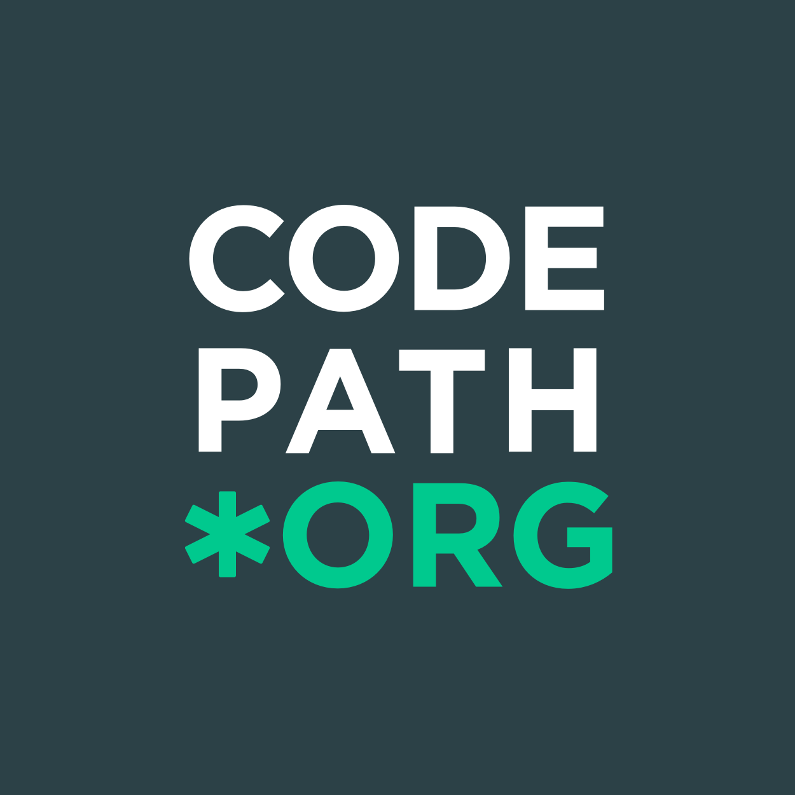August 2024 - May 2025
Codepath
Web Development Tech Fellow
Mentored and supported 12-16 students in CodePath's Web Development course, focusing on HTML, CSS, and JavaScript. Guided students in building responsive websites and enhancing technical interview skills for web development careers.

August 2024 - December 2024
Latitude Ai
Machine Learning Fellow
Led efforts to optimize Bird's-Eye View (BEV) segmentation, reducing memory and computation requirements for autonomous vehicle systems. Applied techniques from the PointBEV paper to enhance AI model performance for self-driving applications. Collaborated with team members to integrate AI-driven solutions and improve system accuracy, solving real-world challenges in autonomous driving. Debugged and fine-tuned AI models to ensure high precision, contributing to advancements in BEV segmentation technology.
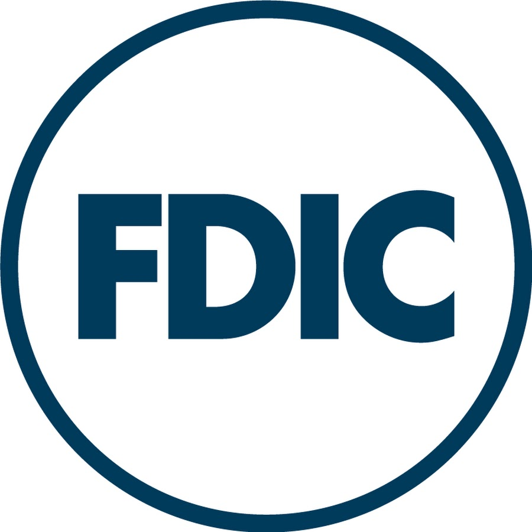June 2024 - August 2024
Federal Deposit Insurance Corporation
Large Data Management Intern
Developed a cross-walking tool that seamlessly connected FDIC documents with their FRB numbers, enabling efficient data matching with a single click. Explored and implemented Power BI solutions to investigate the potential for AI integration within the government sector, improving data analytics capabilities. Contributed to the FDIC website by creating a comprehensive glossary of API information sources, enhancing data transparency and accessibility for users.
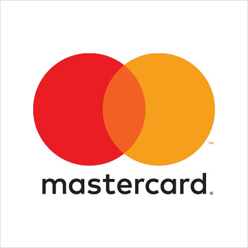January 2023
MasterCard
Product Management Intern
Within three weeks, developed a time-saving solution using REST API to streamline software engineering data transfer into PowerPoint, saving hundreds of hours for around two hundred teams, while gaining valuable experience in sprint methodologies and software engineering fundamentals, and ensuring effective project execution and timely delivery through Agile principles and practices, including daily stand-ups, sprint planning, and grooming.
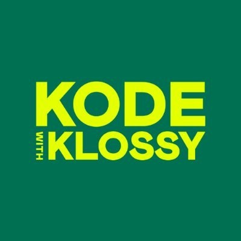August 2022
Kode With Klossy
Intern
In just two weeks, created an impactful website raising awareness about food insecurity and its causes, reaching thousands of visitors with educational content and motivating them to take action, while effectively collaborating with a diverse team to develop comprehensive solutions that alleviated food insecurity in local communities.
July 2021 - August 2021
IBM P-TECH
Human Resources Intern
Led daily standups, fostering progress and addressing roadblocks, while delivering an Agile-based presentation to GBS leaders in six weeks and facilitated Agile principles and practices to develop an application helping dyslexic individuals find the nearest gas stations, thereby reducing the risk of car accidents.
Highlights
-
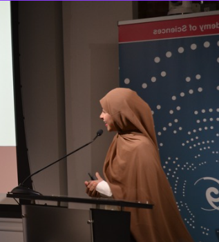
-
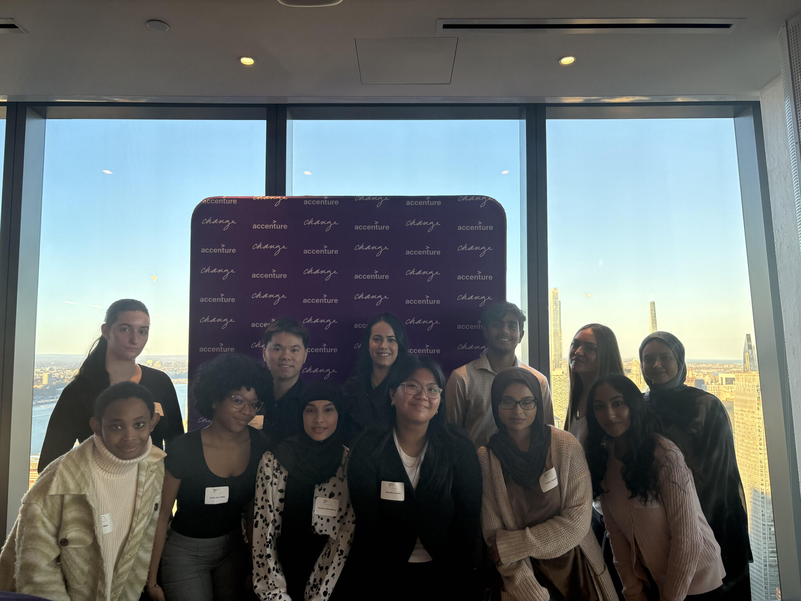
-
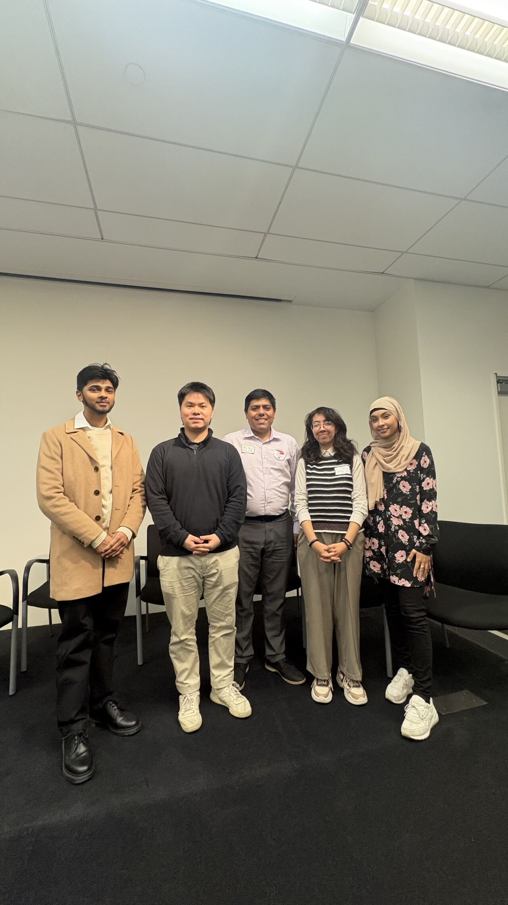
-
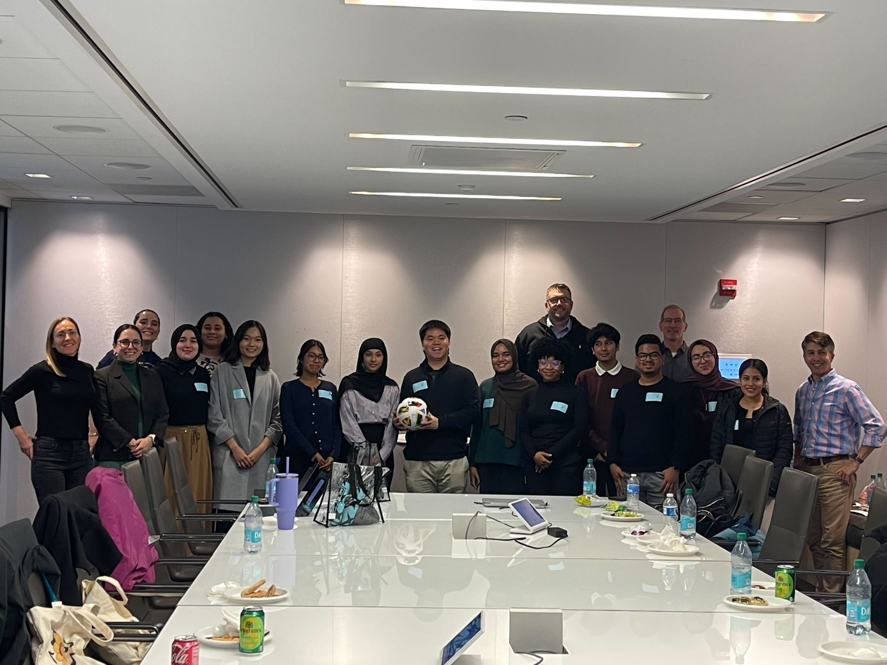
-
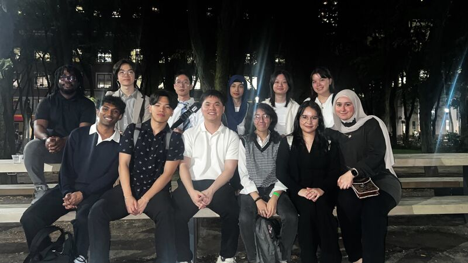
-
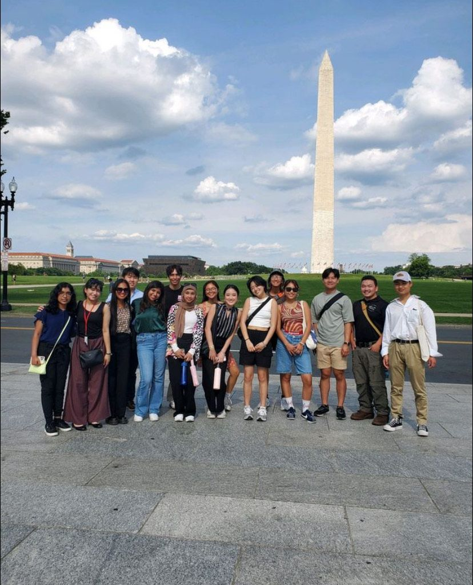
-
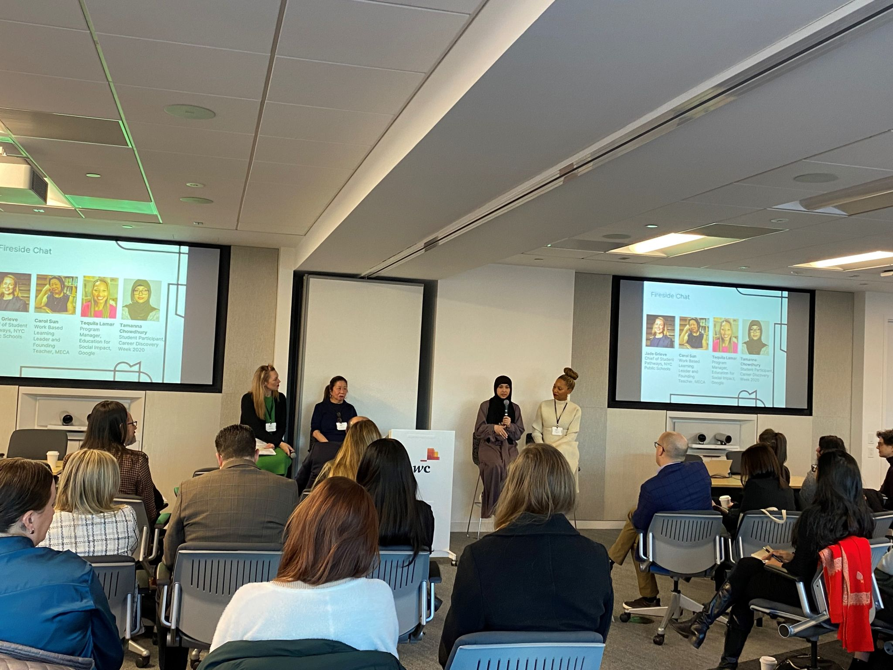
-
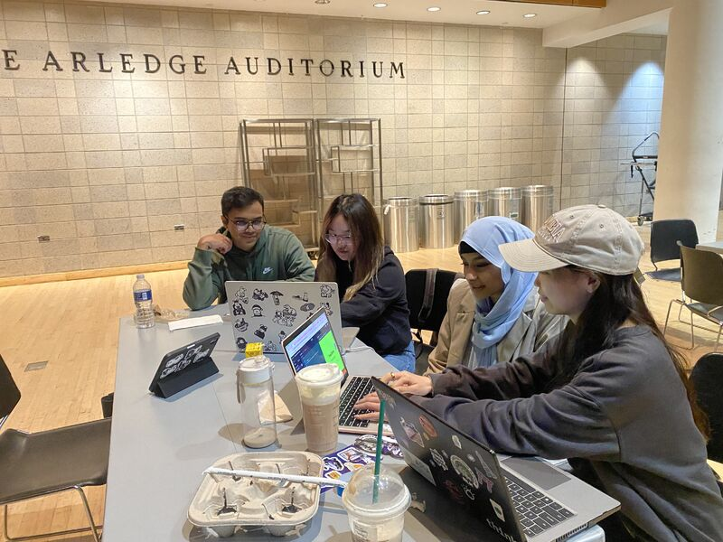
-
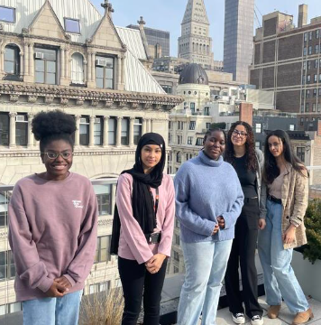
-
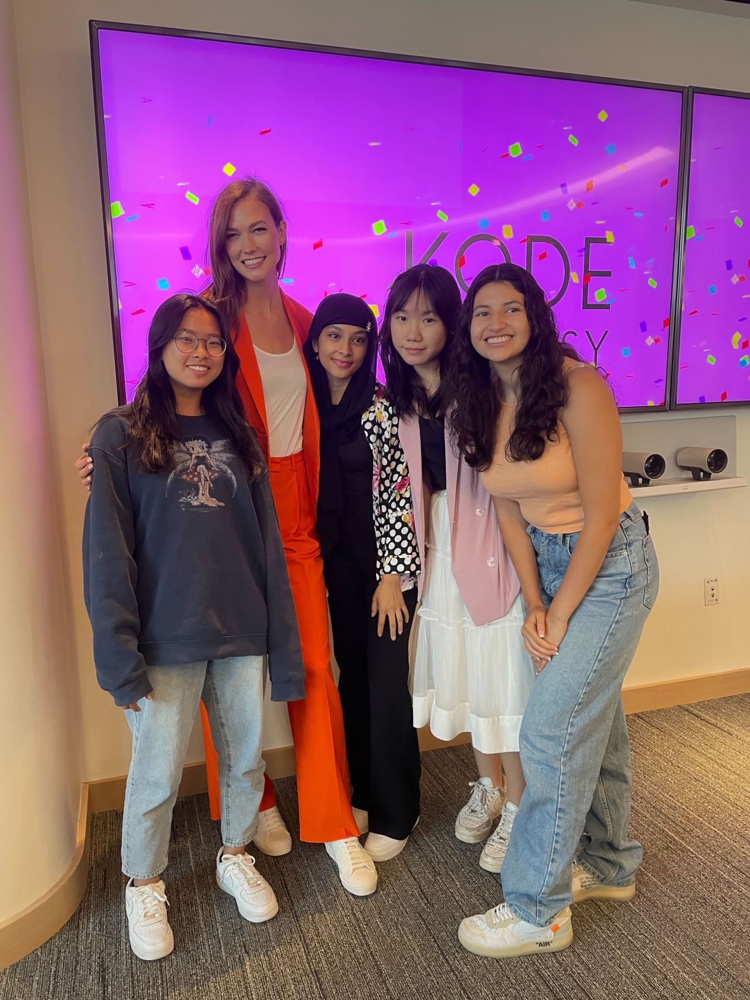
About Me
I'm Tamanna Chowdhury, a Computer Science graduate from Hunter College and an adjunct professor there, with industry experience in software engineering and AI-driven solutions. I’ve worked on large-scale systems at Latitude AI and the FDIC, applying machine learning and data optimization techniques to real-world problems, and built full-stack applications that improve scalability and user experience. My strengths lie in bridging deep technical knowledge with practical implementation—whether optimizing AI models, engineering data pipelines, or designing end-to-end software systems. I’m excited about opportunities where I can contribute as a software or data engineer to build reliable, impactful technologies.
Get in Touch
Currently seeking remote software engineering opportunities within inclusive and diverse teams, as well as clients in the tech industry.